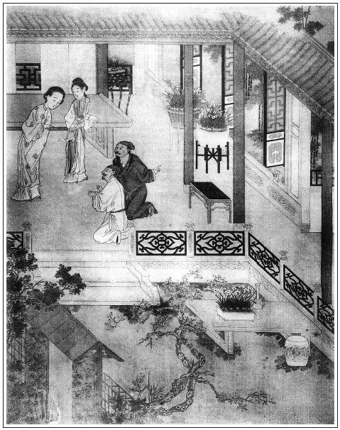

張回一路寫敬濟不孝處，不能竟此篇，而令人有拔劍逐之之憤。是作者特特寫其不孝處，以與金蓮待其母相對，見一對萬惡禽獸也。
永福寺，如封神台一樣，卻不像一對魂旗引去之惡套。如武大死，永福寺唸經，結穴於永福寺也。楊宗保非數內人，故其唸經用素僧。子虛又用永福寺僧唸經，一樣結穴也。瓶兒雖並用吳道官，實結穴於永福寺，千金喜捨，本為官哥也。至梵僧藥，實自永福得來，自為瓶兒致病之由，而西門溺血之故，亦由此藥起。則西門又結穴於此寺。至於敬濟，亦葬永福。玉樓由永福寺來，而遇李衙內。月娘、孝哥、小玉，俱自永福而悟道。他如守備、雪娥、大姐、蕙蓮、張勝、周義等，以及諸殘形怨憤之鬼，皆於永福寺脫化而去。是永福寺，即封神台之意。但用筆參差矯健，真如天際神龍，令人有風雲不測之概，以視《封神》，真有金矢之別。
此回金蓮，乃是著一個竟入永福寺，又是一樣寫法。永福寺中，一曰現身之梵僧，二曰長老道堅，然則其寺可知矣。永者，湧也。福者，腹也。湧於腹下者，何物也？作者開卷固雲，生我之門死我戶，即此永福寺也。所謂報恩寺者，生我門也。總之和尚出入之門也。
至於玉皇廟，即《黃庭》所云靈台也，天府也，此吾之心也。故雲有道人出入，蓋道心生也。吳道官，蓋喻言西門慶等，心中無天理，無道心也。十兄弟在吳道之玉皇廟結盟，其兄弟可知。故必用進第二重殿，轉過一重側門也。眾人齊在玉皇廟側門內會吳道，可知不是天心，而一片冤魂齊集永福寺，可知看得過時忍不過也。看官今後，方不被作者之哄。然吾恐作者罪我以此，而知我亦以此矣。
詩曰：
夢中雖暫見，張旁是夢。及覺始知非。張旁不夢。
轉展不成寐，張旁求夢。徒倚獨披衣。張旁不能夢。
淒淒曉風急，張旁不是夢。醃醃月光微。張旁無非夢。
空床常達旦，張旁空有夢。所思終不歸。張旁難再夢。

話說武松殺了婦人、王婆，劫去財物，逃上梁山去了，不題。且說王潮兒街上叫了保甲來，見武松家前後門都不開，又王婆家被劫去財物，房中衣服丟的橫三豎四，張夾內有金蓮所成者。就知是武松殺人劫財而去。未免打開前後門，見血瀝瀝兩個死屍倒在地下，婦人心肝五臟用刀插在後樓房簷下。迎兒倒扣在房中。問其故，只是哭泣。繡旁一毫不假。次日早衙，呈報到本縣，殺人凶刃都拿放在面前。本縣新任知縣也姓李，雙名昌期，張夾此理，非尋常之理。乃河北真定府棗強縣人氏。聽見殺人公事，即委差當該吏典，拘集兩鄰保甲，並兩家苦主王潮、迎兒。眼同當街，如法檢驗。生前委被武松因忿帶酒，殺潘氏、王婆二命，疊成文案，就委地方保甲瘞埋看守。掛出榜文，四廂差人跟尋，訪拿正犯武松，有人首告者，官給賞銀五十兩。
守備府中張勝、李安打著一百兩銀子到王婆家，看見王婆、婦人俱已被武松殺死，縣中差人檢屍，捉拿兇犯。二人回報到府中。張夾好過文。春梅聽見婦人死了，整哭了兩三日，茶飯都不吃。張夾知己如此。慌了守備，使人門前叫調百戲的貨郎兒進去，耍與他觀看，只是不喜歡。張夾直渡敬濟。日逐使張勝、李安打聽，拿住武松正犯，告報府中知道，不在話下。
按下一頭。且表陳敬濟前往東京取銀子，一心要贖金蓮，成其夫婦。不想走到半路，撞見家人陳定從東京來，告說家爺病重之事：「奶奶使我來請大叔往家去，囑托後事。」這敬濟一聞其言，兩程做一程，路上趲行。有日到東京他姑夫張世廉家。
張世廉已死，止有姑娘見在。他父親陳洪已是沒了三日，滿家帶孝。敬濟參見他父親靈座。與他母親張氏並姑娘磕頭。張氏見他成人，張夾父母望子之心如此。母子哭做一處，通同商議：「如今一則以喜，一則以憂。」繡眉父死而有子長成，喜可知也。然而殊不然，可為疼心。敬濟便道：「如何是喜，如何是憂？」張氏道：「喜者，如今朝廷冊立東宮，郊天大赦；憂則不想你爹爹病死在這裡，你姑夫又沒了，姑娘守寡，這裡住著不是常法，如今只得和你打發你爹爹靈柩回去，葬埋鄉井，也是好處。」敬濟聽了，心內暗道：「這一回發送，裝載靈柩家小粗重上車，少說也得許多日期耽閣，卻不誤了六姐？繡眉知好色則慕少女，此其一驗。不如先誆了兩車細軟箱籠家去，待娶了六姐，再來搬取靈柩不遲。」張夾人子待父母之心如此，所以此書幻化孝哥也。一面對張氏說道：「如今隨路盜賊，十分難走。假如靈柩家小箱籠一同起身，未免起眼，倘遇小人怎了？寧可耽遲不耽錯。我先押兩車細軟箱籠家去，收拾房屋。母親隨後和陳定、家眷並父親靈柩，過年正月同起身回家，寄在城外寺院，然後做齋唸經、築墳安葬，也是不遲。」張氏終是婦人家，不合一時聽信敬濟巧言，就先打點細軟箱籠，裝載兩大車，上插旗號，扮做香車。從臘月初一日東京起身，不上數日，到了山東清河縣家門首，對他母舅張團練說：「父親已死，母親押靈車，不久就到。我押了兩車行李，先來收拾打掃房屋。」他母舅聽說：「既然如此，我仍搬回家去便了。」一面就令家人搬家活，騰出房子來。敬濟見母舅搬去，滿心歡喜，說：「且得冤家離眼前，張夾後生之待老成如此。落得我娶六姐來家，自在受用。我父親已死，我娘又疼我。張夾為親者聽之，原來如此遂逆子之心。先休了那個淫婦，然後一紙狀子，把俺丈母告到官，追要我寄放東西，誰敢道個不字？繡眉即此一想，折盡平生之福矣。後之流落不得其死，何怪！又挾制俺家充軍人數不成！」張夾便使從前依人之苦脫口一吐。正是：
人便如此如此，天理不然不然。
這敬濟就打了一百兩銀子在腰裡，另外又袖著十兩謝王婆，來到紫石街王婆門首。
可霎作怪，只見門前街旁埋著兩個屍首，上面兩桿槍交叉挑著個燈籠，門前掛著一張手榜，上書：「本縣為人命事：兇犯武松，殺死潘氏、王婆二命，有人捕獲首告官司者，官給賞銀五十兩。」這敬濟仰頭看見，便立睜了。只見窩鋪中站出兩個人來，喝聲道：「甚麼人？看此榜文做甚？見今正身兇犯捉拿不著，你是何人？」大扠步便來捉獲。敬濟慌的奔走不迭，恰走到石橋下酒樓邊，只見一個人，頭戴萬字巾，身穿青衲襖，隨後趕到橋下，說道：「哥哥，你好大膽，平白在此看他怎的？」這敬濟扭回頭看時，卻是一個識熟朋友──鐵指甲楊二郎。張夾順手即出，全不另起支節。二人聲喏。楊二道：「哥哥一向不見，那裡去來？」敬濟便把東京父死往回之事，告說一遍：「恰才這殺死婦人，是我丈人的小，潘氏。不知他被人殺了。適才見了榜文，方知其故。」楊二郎告道：「他是小叔武松，充配在外，遇赦回還，不知因甚殺了婦人，連王婆子也不饒。他家還有個女孩兒，在我姑夫姚二郎家養活了三四年。張夾如此拉來。昨日他叔叔殺了人，走的不知下落。我姑夫將此女縣中領出，嫁與人為妻小去了。繡眉迎兒愚蠢極矣，所遭窮苦至矣，而究竟不失嫁為人妻。作者拈完此案，不無微意。張夾完迎兒。見今這兩個屍首，日久只顧埋著，只是苦了地方保甲看守，更不知何年月日才拿住兇犯武松。」說畢，楊二郎招了敬濟，上酒樓飲酒：「與哥拂塵。」敬濟見婦人已死，心中痛苦不了，那裡吃得下酒。約莫飲勾三杯，就起身下樓，作別來家。
到晚夕，買了一陌錢紙，在紫石街離王婆門首遠遠的石橋邊，叫著婦人：「潘六姐，我小兄弟陳敬濟，今日替你燒陌錢紙。皆因我來遲了一步，誤了你性命。張夾卻為你早了一步送了性命也。你活時為人，死後為神，早保佑捉獲住仇人武松，替你報仇雪恨。我在法場上看著剮他，方趁我平生之志。」說畢哭泣，燒化了錢紙。敬濟回家，閉了門戶。走歸房中，恰才睡著，似睡不睡，夢見金蓮身穿素服，一身帶血，向敬濟哭道：「我的哥哥，我死的好苦也！實指望與你相處在一處，不期等你不來，被武松那廝害了性命。如今陰司不收，我白日游遊蕩蕩，夜歸各處尋討漿水，適間蒙你送了一陌錢紙與我。但只是仇人未獲，我的屍首埋在當街，你可念舊日之情，買具棺材盛了葬埋，免得日久暴露。」敬濟哭道：「我的姐姐，我可知要葬埋你。張旁與西門瓶兒夢中相呼一對。但恐我丈母那無仁義的淫婦知道。他只恁賴我，倒趁了他機會。姐姐，你須往守備府中，對春梅說知，教他葬埋你身屍便了。」婦人道：「剛才奴到守備府中，又被那門神戶尉攔擋不放，奴須慢慢再哀告他則個。」敬濟哭著，還要拉著他說話，被他身上一陣血腥氣，撇氣掙脫，卻是南柯一夢。枕上聽那更鼓時，正打三更三點，說道：「怪哉！我剛才分明夢見六姐向我訴告衷腸，教我葬埋之意，又不知甚年何日拿著武松，是好傷感人也！」正是：
夢中無限傷心事，獨坐空房哭到明。
按下一頭。卻表縣中訪拿武松，約兩個月有餘，捕獲不著，已知逃遁梁山為盜。地方保甲鄰佑呈報到官，所有兩個屍首，相應責令家屬領埋。王婆屍首，便有他兒子王潮領的埋葬。止有婦人身屍，無人來領。卻說府中春梅，兩三日一遍，使張勝、李安來縣中打聽。張夾補出。回去只說兇犯還未拿住，屍首照舊埋瘞，地方看守，無人敢動。
直挨過年，正月初旬時節，忽一日晚間，春梅作一夢。恍恍惚惚，夢見金蓮雲髻蓬鬆，渾身是血，叫道：「龐大姐，我的好姐姐，奴死的好苦也！所有奴的屍首，在街暴露日久，風吹雨灑，雞犬作踐，無人領埋。奴舉眼無親，你若念舊日母子之情，買具棺木，把奴埋在一個去處，奴在陰司口眼皆閉。」繡眉金蓮一身，生時任人狼籍，即路倒路埋，所不惜也。及死後轉戀戀此屍，亦大可笑。說畢大哭不止。春梅扯住他，還要再問他別的話，被他掙開，撇手驚覺，卻是南柯一夢。從睡夢中直哭醒來，張夾金蓮二夢與此同時瓶兒二夢，又遙遙相對。心內猶疑不定。
次日叫進張勝、李安分付：「你二人去縣中打聽，那埋的婦人、婆子屍首還有也沒有。」張勝、李安應諾去了。不多時，來回報：「正犯凶身已自逃走脫了。所有殺死身屍，地方看守，日久不便，相應責令各人家屬領埋。那婆子屍首，他兒子招領的去了。那婦人無人來領，還埋在街心。」春梅道：「既然如此，我這樁事兒，累你二人替我幹得來，我還重賞你。」二人跪下道：「小夫人說那裡話，若肯在老爺前抬舉小人一二，便消受不了。雖赴湯跳水，敢說不去？」春梅走到房中，拿出十兩銀子，兩疋大布，委付二人道：「這死的婦人，是我一個嫡親姐姐，嫁在西門慶家，今日出來，被人殺死。你二人休教你老爺知道，拿這銀子替我買一具棺材，把他裝殮了，抬出城外，擇方便地方埋葬停當，我還重賞你。」二人道「這個不打緊，小人就去。」李安說：「只怕縣中不教你我領屍怎了？須拿老爺個帖兒，下與縣官才好。」張勝道：「只說小夫人是他妹子，嫁在府中，那縣官不敢不依，何消帖子。」於是領了銀子，來到班房內。張勝便向李安說：「想必這死的婦人，與小夫人曾在西門慶家做一處，相結的好，今日方這等為他費心。想著死了時，整哭了三四日，不吃飯，直教老爺門前叫了調百戲貨郎兒，調與他觀看，還不喜歡。今日他無親人領去，小夫人豈肯不葬埋他？咱每若替他幹得此事停當，早晚他在老爺跟前，只方便你我，就是一點福星。繡眉春梅一女奴也，忽變而為福星，斯亦奇矣。及認為福星，則又變而為惡煞矣，造化不測如此。見今老爺百依百隨，聽他說話，正經大奶奶、二奶奶且打靠後。」張夾總為春梅得意描寫也。說畢，二人拿銀子到縣前遞了領狀，就說他妹子在老爺府中，來領屍首。使了六兩銀子，合了一具棺材，把婦人屍首掘出，把心肝填在肚內，用線縫上，張夾寫出金蓮之慘。用布裝殮停當，裝入材內。繡旁二人幹事殊不苟。張勝說：「就埋在老爺香火院永福寺裡罷，張夾惟金蓮與敬濟直入永福寺，是貪此不厭，陷溺之尤者。那裡有空閒地。」就叫了兩名伴當，抬到永福寺，對長老說：「這是宅內小夫人的姐姐，要一塊地兒葬埋。」長老不敢怠慢，就在寺後揀一塊空心白楊樹下那裡葬埋。已畢，走來宅內回春梅話，說：「除買棺材裝殮，還剩四兩銀子。」交割明白。春梅分付：「多有起動，你二人將這四兩銀子，拿二兩與長老道堅，教他早晚替他念些經懺，超度他升天。」又拿出一大罈酒，一腿豬肉，一腿羊肉：「這二兩銀子，你每人將一兩家中盤纏。」二人跪下，那裡敢接？只說：「小夫人若肯在老爺面前抬舉小人，消受不了。這些小勞，豈敢接受銀兩。」春梅道：「我賞你，不收，我就惱了。」二人只得磕頭領了出來。兩個班房吃酒，甚是稱念小夫人好處。繡旁寫盡淺人眼孔。張夾映後文二人結果。次日，張勝送銀子與長老唸經，春梅又與五錢銀子買紙，與金蓮燒，俱不在話下。
卻說陳定從東京載靈柩家眷到清河縣城外，把靈柩寄在永福寺，等唸經發送，歸葬墳內。敬濟在家聽見母親張氏家小車輛到了，父親靈柩寄停在城外永福寺，收卸行李已畢，與張氏磕了頭。張氏怪他：「就不去接我一接。」繡旁微露一斑。敬濟只說：「心中不好，家裡無人看守。」張氏便問：「你舅舅怎的不見？」敬濟道：「他見母親到，連忙搬回家去了。」張氏道：「且教你舅舅住著，慌搬去怎的？」一面他母舅張團練來看姐姐。姊妹抱頭而哭，置酒敘說，不必細說。
次日，張氏早使敬濟拿五兩銀子、幾陌金銀錢紙，往門外與長老，替他父親唸經。正騎頭口街上走，忽撞遇他兩個朋友陸大郎、楊大郎，下頭口聲喏。二人問道：「哥哥那裡去？」張夾又是哥哥起頭，蓋寫敬濟又一小熱結也。敬濟悉言：「先父靈柩寄在門外寺裡，明日二十日是終七，家母使我送銀子與長老，做齋唸經。」二人道：「兄弟不知老伯靈柩到了，有失弔問。」因問：「幾時發引安葬？」敬濟道：「也只在一二日之間，唸經畢，入墳安葬。」說罷，二人舉手作別。這敬濟又叫住，因問楊大郎：「縣前我丈人的小，那潘氏屍首怎不見？被甚人領的去了？」楊大郎便道：「半月前，地方因捉不著武松，稟了本縣相公，令各家領去葬埋。王婆是他兒子領去。這婦人屍首，丟了三四日，被守備府中買了一口棺材，差人抬出城外永福寺去葬了。」敬濟聽了，就知是春梅在府中收葬了他屍首。因問二郎：「城外有幾個永福寺？」二郎道：「南門外只有一個永福寺，是周秀老爺香火院，那裡有幾個永福寺來？」敬濟聽了，暗喜：「就是這個永福寺，也是緣法湊巧，喜得六姐亦葬在此處。」一面作別二人，打頭口出城，逕到永福寺中。見了長老，且不說唸經之事，就先問長老道堅：「此處有守備府中新近葬的一個婦人，在那裡？」長老道：「就在寺後白楊樹下。說是宅內小夫人的姐姐。」這陳敬濟且不參見他父親靈柩，繡眉寫敬濟不孝處刺骨，然此等不孝中人，上下皆有之，讀者不可徒笑敬濟，而不自省也。張夾人子待父之禮又如此。先拿錢祭物，至於金蓮墳上，與他祭了，燒化錢紙，哭道：「我的六姐，你兄弟陳敬濟來與你燒一陌紙錢，你好處安身，苦處用錢。」祭畢，然後才到方丈內他父親靈柩跟前燒紙祭祀。遞與長老經錢，教他二十日請八眾禪僧，念斷七經。長老接了經襯，備辦齋供。敬濟到家，回了張氏話。二十日都去寺中拈香，擇吉發引，把父親靈柩歸到祖塋。安葬已畢，來家母子過日不題。
卻表吳月娘，一日二月初旬，天氣融和，孟玉樓、孫雪娥、西門大姐、小玉，出來大門首站立，觀看來往車馬，人煙熱鬧。忽見一簇男女，跟著個和尚，生的十分胖大，頭頂三尊銅佛，身上勾著數枝燈樹，杏黃袈裟風兜袖，赤腳行來泥沒踝。當時古人有幾句，讚的這行腳僧好處：
打坐參禪，講經說法。鋪眉苦眼，習成佛祖家風；賴教求食，立起法門規矩。白日裡賣杖搖鈴，黑夜間舞槍弄棒。有時門首磕光頭，餓了街前打響嘴。空色色空，誰見眾生離下土？去來來去，何曾接引到西方。
那和尚見月娘眾婦人在門首，便向前道了個問訊，說道：「在家老菩薩施主，既生在深宅大院，都是龍華一會上人。貧僧是五台山下來的，結化善緣，蓋造十王功德，三寶佛殿。仰賴十方施主菩薩，廣種福田，捨資才共成勝事，種來生功果。貧僧只是挑腳漢。」張夾自雲漢子，想要挑腳也。月娘聽了他這般言語，便喚小玉往房中以一頂僧帽，一雙僧鞋，一吊銅錢，一斗白米。原來月娘平昔好齋僧佈施，常時發心做下僧帽、僧鞋，預備來施。這小玉取出來，月娘分付：「你叫那師父近前來，佈施與他。」這小玉故做嬌態，高聲叫道：「那變驢的和尚，過不過來！繡眉和尚能變驢，當更有人愛。俺奶奶佈施與你這許多東西，還不磕頭哩。」張夾必令小玉出落一番，一者為竊玉作根，二者為幻化夢中一引也。月娘便罵道：「怪墮業的小臭肉兒，一個僧家，是佛家弟子，你有要沒緊，恁謗他怎的？不當家化化的，你這小淫婦兒，到明日不知墮多少罪業！」小玉笑道：「奶奶，這賊和尚，我叫他，他怎的把一雙賊眼，眼上眼下打量我？」那和尚雙手接了鞋帽錢來，打問訊說道：「多謝施主老菩薩佈施。」小玉道：「這禿廝好無禮。這些人站著，只打兩個問訊兒，就不與我打一個兒？」張夾總襯小玉得時寵眷。月娘道：「小肉兒，還恁說白道黑道。他一個佛家之子，你也消受不的他這個問訊。」小玉道：「奶奶，他是佛爺兒子，誰是佛爺女兒？」繡眉戲謔得有韻有趣，可作《世說》補。張夾總襯小玉寵眷。月娘道：「相這比丘尼姑僧，是佛的女兒。」小玉道：「譬若說，相薛姑子、王姑子、大師父，都是佛爺女兒，誰是佛爺女婿？」張夾愈轉愈妙。月娘忍不住笑，罵道：「這賊小淫婦兒，也學的油嘴滑舌，見見就說下道兒去了。」張夾是偏愛語。小玉道：「奶奶只罵我，本等這禿和尚賊眉豎眼的只看我。」繡眉小玉情竇之開，而耳目多事，不必言說，和尚看他，卻未必盡謗也。孟玉樓道：「他看你，想必認得你，要度脫你去。」小玉道：「他若度我，我就去。」張夾直照一百回小玉入夢。說著，眾婦女笑了一回。月娘喝道：「你這小淫婦兒，專一毀僧謗佛。」那和尚得了佈施，頂著三尊佛揚長去了。小玉道：「奶奶還嗔我罵他，你看這賊禿，臨去還看了我一眼才去了。」張夾一段為月娘寵小玉，又為小玉聽眾夢一段脈也。有詩單道月娘修善施僧好處：
守寡看經歲月深，私邪空色久違心。
奴身好似天邊月，不許浮雲半點侵。張眉直照雲理守之夢。此段蓋為結文一照。
月娘眾人正在門首說話，忽見薛嫂兒提著花箱兒，從街上過來。見月娘眾人道了萬福。月娘問：「你往那裡去來？怎的影跡兒也不來我這裡走走？」薛嫂兒道：「不知我終日窮忙的是些甚麼。這兩日，大街上掌刑張二老爹家，張夾開口刺人。與他兒子和北邊徐公公家做親，娶了他侄女兒，也是我和文嫂兒說的親事。昨日三朝，擺大酒席，忙的連守備府裡咱家小大姐那裡叫我，也沒去，不知怎麼惱我哩。」張夾一語便將邇日春梅一邊無數新寵一齊勾出。亦如《西廂記》之不做周方句也。蓋薛嫂連日自有滿肚皮得意殺，小夫人之意亦如月娘，亦知其如此也。月娘問道：「你如今往那裡去？」薛嫂道：「我有樁事，敬來和你老人家說來。」月娘道：「你有話進來說。」一面讓薛嫂兒到後邊上房裡坐下，吃了茶。薛嫂道：「你老人家還不知道，你陳親家從去年在東京得病沒了，親家母叫了姐夫去，搬取老小靈柩。從正月來家，已是唸經發送，墳上安葬畢。我聽說你老人家這邊知道，怎不去燒張紙兒，探望探望。」月娘道：「你不來說，俺怎得曉的，又無人打聽。繡眉絕不露來蹤去跡。倒只知道潘家的吃他小叔兒殺了，和王婆子都埋在一處，卻不知如今怎樣了。」薛嫂兒道：「自古生有地兒死有處。五娘他老人家，不因那些事出去了，卻不好來。張夾可知殺金蓮者，月娘也。文旁如此斷案，不知冤屈死多少人。金蓮不出去，月娘恐亦在被殺之列，血濺鴛鴦樓不是榜樣乎？況金蓮出去，亦有自取之道，此等淫婦留在家中，將欲開窯子耶？且金蓮早就該死。果是月娘殺之，乃月娘之功，非月娘之罪也。平日不守本分，幹出醜事來，出去了，若在咱家裡，他小叔兒怎得殺了他？還是冤有頭，債有主。倒還虧了咱家小大姐春梅，越不過娘兒們情場，差人買了口棺材，領了他屍首，葬埋了。不然只顧暴露著，又拿不著小叔子，誰去管他？」孫雪娥在旁說：「春梅在守備府中多少時兒，就這等大了？張夾為雪娥伏線。手裡拿出銀子，替他買棺材埋葬，那守備也不嗔，當他甚麼人？」繡眉不知天下士，猶作布衣看。張夾雪娥不知西門家之春梅已經受辱；今又小視守備府之春梅，能不又受辱乎。薛嫂道：「耶樂，你還不知，守備好不喜他，每日只在他房裡歇臥，說一句依十句，一娶了他，見他生的好模樣兒，乖覺伶俐，就與他西廂房三間房住，撥了個使女伏侍他。老爺一連在他房裡歇了三夜，替他裁四季衣服，上頭。三日吃酒，賞了我一兩銀子，一疋段子。他大奶奶五十歲，雙目不明，吃長齋，不管事。東廂孫二娘生了小姐，雖故當家，撾著個孩子。如今大小庫房鑰匙，倒都是他拿著，守備好不聽他說話哩。且說銀子，手裡拿不出來？」繡眉聞此語月娘猶可，雪娥將氣死矣。幾句說的月娘、雪娥都不言語。坐了一回，薛嫂起身。月娘分付：「你明日來，我這裡備一張祭桌，一疋尺頭，一分冥紙，你來送大姐與他公公燒紙去。」薛嫂兒道：「你老人家不去？」月娘道：「你只說我心中不好，改日望親家去罷。」繡眉月娘為德不卒，到此未免有慚色。張夾此日月娘有不好見人之勢。那薛嫂約定：「你教大姐收拾下等著我。飯罷時候我來。」月娘道：「你如今到那裡去？守備府中不去也罷。」薛嫂道：「不去，就惹他怪死了。他使小伴當叫了我好幾遍了。」月娘道：「他叫你做甚麼？」薛嫂道：「奶奶，你不知。他如今有了四五個月身孕了，張夾映出。老爺好不喜歡，叫了我去，已定賞我。」提著花箱，作辭去了。雪娥便說：「老淫婦說的沒個行款也！他賣與守備多少時，就有了半肚孩子，那守備身邊少說也有幾房頭，莫就興起他來，這等大道？」繡眉世上一種輕薄人，只是眼淺。張夾天下總是如此量人，可勝浩歎。月娘道：「他還有正景大奶奶，房裡還有一個生小姐的娘子兒哩。」雪娥道：「可又來！到底還是媒人嘴，一尺水十丈波的。」不因今日雪娥說話，
正是：
從天降下鉤和線，就地引來是非來。
有詩為證：
曾記當年侍主旁，誰知今日變風光。
世間萬事皆前定，莫笑浮生空自忙。
文回文禹門云：潘金蓮一生，僅結交得陳、龐二人。然敬濟不過色慾起見，並非情義相孚，受其害而未得其力，冒惡名而又遭實禍，尚非是好相與也。不但二人斷無相合之理，縱使相合，亦斷無長久之勢。留個有餘不盡，轉覺二人之交情，更深於西門慶，庶可使西門慶人死而心亦可死，地下相逢，當不似生前之纏綿綢繆也。若春梅與金蓮，不但肝膽相共，肺腑相投，直是形骸俱忘，並赤身露體於男子之前，我不爾羞，爾不我恥。不但姐妹無此親熱，即母女亦尚有嫌疑也，是兩人直是一人矣。
看書者往往袒護玉樓而推尊春梅也，不知其是何見解？玉樓下文再表。此回春梅之埋金蓮，是春梅好處。惟念金蓮為人間不可有之人，為人家不可留之人，竟有與之死生不易，心意相合者，此其人為何如人乎？楊雄之美王莽，荀彧之附曹操，後世猶或非之。若秦檜之萬俟契諸人，嚴嵩之崔呈琇諸人，而竟目為賢臣正士，有不斥其妄者，則亦妄人而已矣。春梅不過性氣剛，運氣順，其氣焰可以攝月娘等一群愚婦女。曾是自命不凡者，而亦為聲氣所振，竟下氣於春梅之裙帶間哉！此書以《金瓶梅》命名，平列三人者，可以思作者之用意矣。